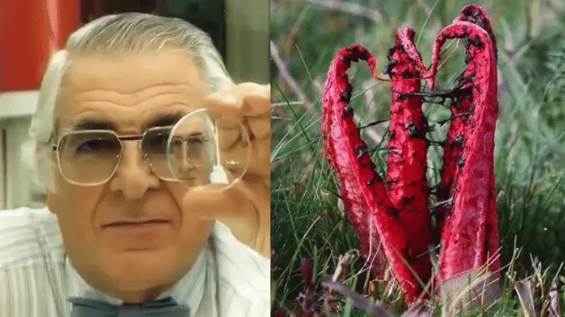

Prima è difficile leggere i sottotitoli. Poi i cartelli stradali diventano sfocati. Poi smetti di guidare di notte. E un giorno — senza accorgertene — qualcun altro deve accompagnarti ovunque tu vada.
La perdita della vista non avviene all'improvviso. Avanza lentamente, in silenzio — finché una mattina ti svegli e realizzi che non riconosci più i volti dei tuoi nipoti da lontano, non riesci a leggere la ricetta medica, altri decidono al posto tuo cosa puoi e non puoi fare. E la cosa più tragica? Non è inevitabile.
Il Dr. Bush, oftalmologo con decenni di esperienza clinica, ha iniziato a porre domande che i suoi colleghi non ponevano mai. Perché alcuni perdono la vista rapidamente mentre altri mantengono una visione perfetta fino in tarda età? Cosa c'è di diverso nei loro occhi?
Quello che ha scoperto ha scosso la comunità medica. I ricercatori dell'Università di Oxford, analizzando oltre 12.000 pazienti, hanno confermato la sua intuizione: la qualità della visione è direttamente collegata allo stato dei minuscoli vasi sanguigni nell'occhio. Quando questi vasi si ostruiscono, le cellule dell'occhio non ricevono abbastanza ossigeno e nutrienti — e in silenzio, giorno dopo giorno, cominciano a morire.
Il processo è silenzioso e progressivo. Non fa male. Non dà segnali evidenti finché il danno non è già avanzato. E ogni giorno trascorso senza agire aumenta il numero di cellule morte — avvicinandosi al punto di non ritorno oltre il quale non è più possibile fare nulla.

Nella stessa ricerca, il Dr. Bush ha identificato qualcosa di straordinario: un semplice trucco con una radice rossa naturale che agisce direttamente sui minuscoli vasi dell'occhio — sciogliendo le ostruzioni, rimuovendo i depositi tossici accumulati e permettendo alle cellule di ricevere nuovamente ossigeno e nutrienti.
I risultati documentati hanno sorpreso gli stessi ricercatori: pazienti che non riuscivano più a leggere senza occhiali, che avevano difficoltà a guidare, che stavano perdendo la capacità di vedere i volti dei propri cari — hanno iniziato a notare miglioramenti già nelle prime settimane.
Il Dr. Bush ha deciso di rendere pubblica questa scoperta in un video gratuito che spiega tutto in dettaglio: da dove proviene questa radice, come agisce esattamente sui vasi dell'occhio e — soprattutto — come utilizzarla correttamente per ottenere i risultati documentati nei suoi pazienti.
Questo video è tutto ciò di cui hai bisogno. Nessun appuntamento, nessuna prescrizione, nessuna procedura costosa. Solo informazioni complete — spiegate in modo chiaro e accessibile — per poter agire già oggi, prima che il danno diventi irreversibile.